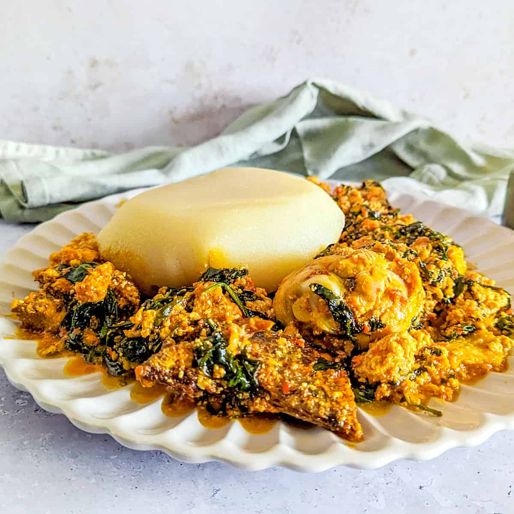

Egusi Soup
Home

Description
A native Nigerian soup primarily known to the Yorubas (south-west region).
Ingredient
- Grounded melon(egusi)
- Blended Pepper & Tomato mix
- Maggi cubes & Salt
- Palmoil
- Sliced onions
- Iru (Locust beans)
- Sliced Ugwu (vegetable)
- Protein (Fish, Ponmo, Assorted Meat)
Steps
- In a small bowl, mix the grounded egusi with little water to form a loose paste
- Pre-boil the assorted meat until tender. Save the meat stock
- Pour Palm oil into a pot on medium heat and allow it to warm up (but do not bleach), add the sliced onions, iru and egusi paste to the oil to fry.
- Stir in the blended pepper mix
- Then, pour the reserved meat stock, also add the protein, maggi and salt to taste, then allow it to cook for 10-15 minutes.
- Wash the sliced ugwu, and add it to the egusi and allow it to simmer on low heat for 3-5 minutes until the vegetables soften, then turn off the heat.